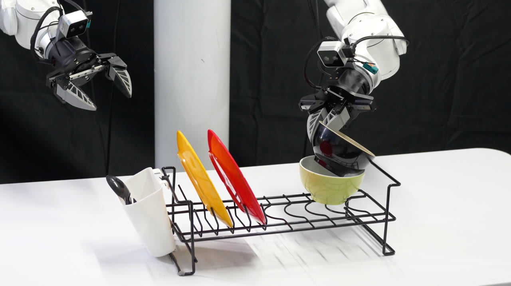

Robot demos ↗Riemann-1.0
An embodied World Action Model for Physical AI.
A causal autoregressive model that unifies executable robot policies and action-conditioned world simulation.
MY CONTRIBUTION
Co-author. Responsible for all model post-training.
99.0%LIBERO94.3%RoboTwin 2.085.0%Real-world SR
Reported project results; see paper for evaluation settings.